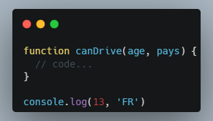
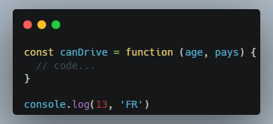
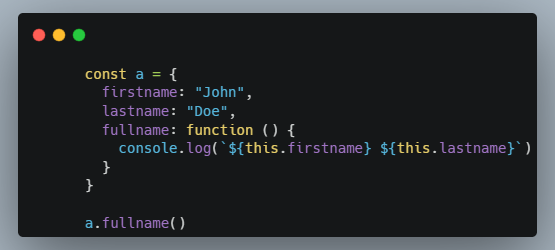
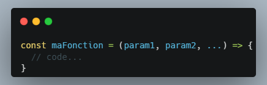
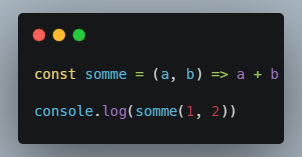
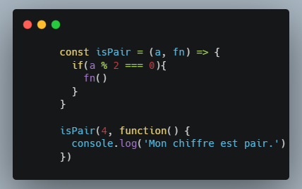
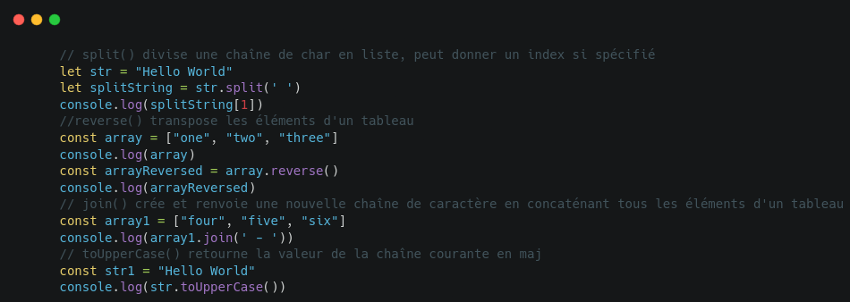

Syntaxe de base :
Syntaxe améliorée :
La différence entre les deux syntaxe est la portée : la première syntaxe peut être appelée par un console.log avant sa déclaration. Tout se passe lors de l'interprétation
Une fonction à la capacité de modifier une variable qui est définie à l'extérieur.
Il est possible de passer des informations à la fonction grâce au mot cle this qui fait référence à l'objet que l'on traite (ex: bouton)
Une fonction sur un objet est appelée méthode.
Syntaxe de la fonction fléchée
La principale différence réside dans le comportement du mot clé this à l'intérieur des fonctions fléchées. Contrairement aux fonctions normales, les fonctions fléchées n'altèrent pas le contexte de this
Les fonctions fléchées peuvent de passer du return. On peut donc écrire une fonction somme de cette façon :
Il est également possible d'utiliser des fonctions dans des fonction
La fonction qui est appelée est appelé un callback. La bonne pratique veut que l'on appelle cette fonction cb
Quelques fonctions natives utiles :
